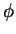

The name ``double exchange'' originated from the proposed scenario of
charge transfer by Zener [75]. The eg electron hopping
from Mn3+ to Mn4+ was first considered to be a one-step
process. Direct hopping is not very likely due to the presence of
bridging O2- atoms. Zener then suggested that the process can be
completed by simultaneous charge transfer from the O2- to
Mn4+, and from Mn3+ to O2-. It is a double exchange
of electrons with the same spin, though it is hard to imagine how it
actually occurs in real systems. A more quantitative study by Anderson
and Hasawaga [78] took a perturbative approach with the
introduction of the hopping amplitude t reflecting the electron
mobility. They proposed that the transfer of electrons from Mn3+ to
Mn4+ occurs one by one, not simultaneously as believed by Zener. One
fundamental result is the dependence of effective hopping amplitude on
the angle  between the classic spins of core electrons (t2g electrons) of the neighboring Mn ions:
teff = t . cos(
between the classic spins of core electrons (t2g electrons) of the neighboring Mn ions:
teff = t . cos( /2). The value of the hopping amplitude t is not well
estimated from either experiments or theories. Dessau and
Shen [100] have reported a value as large as 1 eV,
while a magnitude between 0.2 and 0.5 eV is suggested by Arima
et al. [101,102]. Nevertheless, the fairly
widely accepted value is a fraction of 1
eV [103,104].
/2). The value of the hopping amplitude t is not well
estimated from either experiments or theories. Dessau and
Shen [100] have reported a value as large as 1 eV,
while a magnitude between 0.2 and 0.5 eV is suggested by Arima
et al. [101,102]. Nevertheless, the fairly
widely accepted value is a fraction of 1
eV [103,104].
The 2p orbitals of oxygen atoms are the intermediate medium of the
electron transfers from Mn to Mn. Thus the hopping amplitude should
also depend on the Mn-O-Mn bond angle  = dA-O/(
= dA-O/( dMn-O). Here
dA-O is the nearest neighbor distance between ions on the
perovskite A site and oxygens; dMn-O is the Mn-O bond
length. Generally, localization (insulating) and delocalization
(conducting) of the eg electrons affects the tolerance factor by
changing the average Mn-O bond length. More effectively, chemical
substitution modifies the lattice due to different ionic sizes. The
order of some commonly used ions with increasing size is Mn4+ (0.52 Å), Mn3+ (0.70
Å), Ca2+ (1.06 Å), La3+ (1.22 Å), Sr2+ (1.27
Å), O2- (1.32 Å), and Ba2+ (1.43 Å). A perfect cubic
system results in a tolerance factor of 1, and of 180
degree. When the A site ion is too small and demands a small
dA-O, the dominant effect is the decrease of angle
(octahedral tilt), along with a relatively small decrease of
dMn-O. As discussed before, this would cause the hopping
amplitude to decrease, as observed
experimentally [92,80,105,106].
dMn-O). Here
dA-O is the nearest neighbor distance between ions on the
perovskite A site and oxygens; dMn-O is the Mn-O bond
length. Generally, localization (insulating) and delocalization
(conducting) of the eg electrons affects the tolerance factor by
changing the average Mn-O bond length. More effectively, chemical
substitution modifies the lattice due to different ionic sizes. The
order of some commonly used ions with increasing size is Mn4+ (0.52 Å), Mn3+ (0.70
Å), Ca2+ (1.06 Å), La3+ (1.22 Å), Sr2+ (1.27
Å), O2- (1.32 Å), and Ba2+ (1.43 Å). A perfect cubic
system results in a tolerance factor of 1, and of 180
degree. When the A site ion is too small and demands a small
dA-O, the dominant effect is the decrease of angle
(octahedral tilt), along with a relatively small decrease of
dMn-O. As discussed before, this would cause the hopping
amplitude to decrease, as observed
experimentally [92,80,105,106].